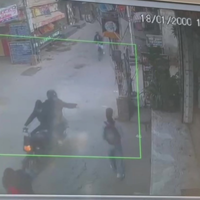

|
|  | Acid used to attack 17-year-old schoolgirl in Delhi was purchased from FlipkartA video of the incident went viral on social media, where two men riding a blue-coloured bike were seen throwing acid at the victim Last Updated: Dec 14, 2022, 22:20 IST
'The acid used in the attack on a 17-year-old schoolgirl in Delhi's Dwarka was purchased from Flipkart, said police. The police also revealed that revenge was the motive, as the girl had ended her friendship with the main accused Sachin. Sachin's friend took his phone and stood with a bike at another spot to create a false alibi." |
Man prosecuted for stunts on road, say Delhi PoliceThe accused used his Maruti Swift car to carry out dangerous stunts and post videos of the acts on Instagram Last Updated: Dec 15, 2022, 12:01 AM IST
The Delhi Police on Wednesday said they have prosecuted a social media influencer, who used his Maruti Swift car to carry out dangerous stunts and post videos of the acts on Instagram. The accused has been identified as Ranbir Singh, police said, adding that no arrests have been made. |
©2022, All right reserved by Precisenews.com, Designed by: Harsh Tejaniya